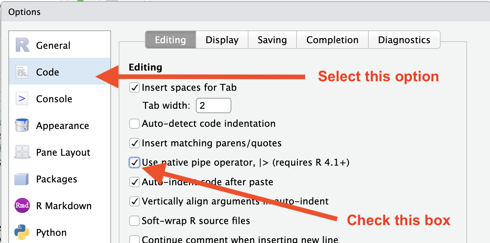
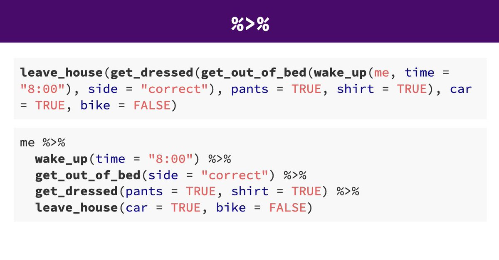

Lesson 7: Data Wrangling Part 1
Readings
Required:
Chapter 3.1 - 3.4 in R for Data Science (2e) by Hadley Wickham, Mine Çetinkaya-Rundel & Garrett Grolemund
Other resources:
Jenny Bryan’s lectures from STAT545 at UBC: Introduction to dplyr
Software Carpentry’s R for reproducible scientific analysis materials: Dataframe manipulation with dplyr
Class announcements
- Please let us know immediately after class if you need a partner for assignment 3 (the collaborative website) - or if you’re not planning on submitting assignment 3, but would like more opportunity to practice collaborating with a partner on GitHub
- For “submitting” assignment 3, please add the URL of the GitHub Pages website to the README file, not the URL of the repo
Learning objectives for today’s class
Now that we have explored some of the powerful ways
ggplot lets us visualize data, let’s take a step back and
discuss tools to get data into the right format we need for downstream
analysis. Often you’ll need to create some new variables or summaries,
or maybe you just want to rename the variables or reorder the
observations in order to make the data a little easier to work with.
Data scientists, according to interviews and expert estimates, spend from 50 percent to 80 percent of their time mired in the mundane labor of collecting and preparing data, before it can be explored for useful information. - NYTimes (2014)
By the end of today’s class, you should be able to:
- Subset and rearrange data with key
dplyrfunctions- Pick observations by their values
filter() - Pick variables by their names
select()
- Pick observations by their values
- Use piping (
|>) to implement function chains - Make sure your RStudio working files are sync’ed to GitHub
Acknowledgements: Today’s lecture is adapted (with permission) from the excellent Ocean Health Index Data Science Training and Jenny Bryan’s lectures from STAT545 at UBC: Introduction to dplyr.
What is data wrangling?
What are some common things you like to do with your data? Maybe remove rows or columns, do calculations and maybe add new columns? This is called data wrangling (“the process of cleaning, structuring and enriching raw data into a desired format for better analysis in less time” by one definition). It’s not data management or data manipulation: you keep the raw data raw and do these things programatically in R with the tidyverse.
We are going to introduce you to data wrangling in R first with the tidyverse. The tidyverse is a suite of packages that match a philosophy of data science developed by Hadley Wickham and the RStudio team. I find it to be a more straight-forward way to learn R. We will also show you by comparison what code will look like in “Base R”, which means, in R without any additional packages (like the “tidyverse” package) installed. I like David Robinson’s blog post on the topic of teaching the tidyverse first.
For some things, base-R is more straightforward, and we’ll show you that too.
Taking notes
Just like last class, we’ll keep practicing our GitHub/version
control integration by pushing our notes onto our course repo. Please
open the R Project that is associated with your class repository (the
name should be ntres-6100-assignments-YOUR_USERNAME
(replace YOUR_USERNAME with your GitHub user ID). Open an R-script or an
RMarkdown file and save it within your course-notes
subdirectory as data_wrangling.R [or whatever you want to
call it]. Use this R-script to type along in the examples we’ll go
through together today (if that works for you), and for your
exercises.
Load tidyverse (which has dplyr
inside)
In your R Markdown file, let’s make sure we’ve got our packages loaded. Write the following:
library(tidyverse) ## install.packages("tidyverse")This is standard practice for how to load a package in a file, and if
you get an error that the package doesn’t exist, you can install the
package easily by running the code within the comment (highlight
install.packages("tidyverse") and run it).
Coronavirus data set
As the COVID-19 crisis was recently at the forefront of everyone’s minds, let’s use a dataset tallying daily developments in recorded Coronavirus cases across the world, so that we can develop our data wrangling skills by exploring global patterns in the pandemic. We acknowledge the stress and grief associated with the reality underpinning these data, but we think they represent a strong example of how we can use data science tools to explore patterns that will improve our understanding of global challenges.

We will use a dataset compiled in the coronavirus
R package developed by Rami Krispin. The dataset includes daily new
and death cases between January 2020 and March 2023 and recovery cases
until August 2022, and during that period was updated daily, pulling raw
data from the Johns Hopkins University Center for Systems Science and
Engineering (JHU CCSE) Coronavirus repository.
The compiled package is available to install like any other package
from CRAN with install.packages. However, in case it was
getting updated, let’s make sure that we’re always working with the most
current version and import the dataset directly from GitHub.
Let’s first check when the coronavirus.csv file on the
coronavirus
package GitHub page was last updated.
If we click on the coronavirus.csv file, we’ll see that
it’s too large to display on GitHub in data-view mode. We can read this
data into R directly from GitHub, without downloading it. But we can’t
read this data in view-mode. We have to click on the View
raw link in the view window. This displays it as the raw csv
file, without formatting.
Copy the url for raw data: https://raw.githubusercontent.com/RamiKrispin/coronavirus/master/csv/coronavirus.csv
Now, let’s go back to RStudio. In our R script, let’s read this csv
file and name the variable “coronavirus”. We will use the
read_csv() function from the readr package
(part of the tidyverse, so it’s already installed!).
# read in corona .csv
coronavirus <- read_csv('https://raw.githubusercontent.com/RamiKrispin/coronavirus/master/csv/coronavirus.csv')For today, don’t worry about how the read_csv() function
works - we will cover the details of data import functions in a few
weeks.
Once we have the data loaded, let’s start getting familiar with its content and format.
Let’s inspect:
## explore the coronavirus dataset
coronavirus # this is super long! Let's inspect in different waysLet’s use head and tail:
head(coronavirus) # shows first 6
tail(coronavirus) # shows last 6
head(coronavirus, 10) # shows first X that you indicate
tail(coronavirus, 12) # guess what this does!We can also see the coronavirus object along with its
dimensions in RStudio’s Environment pane (top right)
More ways to learn basic info on a data.frame.
names(coronavirus)
dim(coronavirus) # ?dim dimension
ncol(coronavirus) # ?ncol number of columns
nrow(coronavirus) # ?nrow number of rowsA statistical overview can be obtained with summary(),
or with skimr::skim()
summary(coronavirus)
# If we don't already have skimr installed, we will need to install it
# install.packages('skimr')
library(skimr) # install.packages("skimr")
skim(coronavirus)Look at the variables inside a data.frame
To specify a single variable from a data.frame, use the dollar sign
$. The $ operator is a way to extract or
replace parts of an object — check out the help menu for $.
It’s a common operator you’ll see in R.
coronavirus$cases # very long! hard to make sense of...
head(coronavirus$cases) # can do the same tests we tried before
str(coronavirus$cases) # it is a single numeric vector
summary(coronavirus$cases) # same information, formatted slightly differentlyIn tidyverse syntax, there are also other ways to pull out single
variables (e.g. with the pull() and select()
functions. We’ll get to those later after we have introduced basic dplyr
workflows.
dplyr basics
OK, so let’s start wrangling with dplyr.
There are five dplyr functions that you will use to do
the vast majority of data manipulations:
filter(): pick observations by their values
select(): pick variables by their names
mutate(): create new variables with functions of existing variables
arrange(): reorder the rows
summarize(): collapse many values down to a single summary

These can all be used in conjunction with group_by()
which changes the scope of each function from operating on the entire
dataset to operating on it group-by-group. These six functions provide
the verbs for a language of data manipulation. We will cover at
least the first two today and continue with the rest on
Thursday.
All verbs work similarly:
- The first argument is a data frame.
- The subsequent arguments describe what to do with the data frame.
You can refer to columns in the data frame directly without using
$. - The result is a new data frame.
Together these properties make it easy to chain together multiple simple steps to achieve a complex result.
filter() subsets data row-wise (observations).
You will want to isolate bits of your data; maybe you want to only look at a single country or specific days or months. R calls this subsetting.
filter() is a function in dplyr that takes
logical expressions and returns the rows for which all are
TRUE.
Visually, we are doing this (thanks RStudio for your cheatsheet):
Are you familiar with how to invoke logical expressions in R? If not,
here is an overview here.
We’ll use > and == here.
filter(coronavirus, cases > 0)You can say this out loud: “Filter the coronavirus data for cases greater than 0”. Notice that when we do this, all the columns are returned, but only the rows that have the a non-zero case count. We’ve subsetted by row.
Let’s try another: “Filter the coronavirus data for the country US”.
filter(coronavirus, country == "US")Note that when you run that line of code, dplyr executes
the filtering operation and returns a new data frame. dplyr
functions never modify their inputs, so if you want to save the result,
you’ll need to use the assignment operator, <-:
coronavirus_us <- filter(coronavirus, country == "US")How about if we want two country names? We can’t use a single
instance of the == operator here, because it can only
operate on one thing at a time. We can use Boolean
operators for this: & is “and”, | is
“or”, and ! is “not”. So if we want records from both the
US and Canada, we can type
filter(coronavirus, country == "US" | country == "Canada")A useful short-hand for this problem is x %in% y. This
will select every row where x is one of the values in
y. We could use it to rewrite the code above:
filter(coronavirus, country %in% c("US", "Canada"))How about if we want only the death counts in the US? You can pass filter different criteria:
# We can use either of these notations:
filter(coronavirus, country == "US", type == "death")
filter(coronavirus, country == "US" & type == "death")
Your turn - Exercise 1
1a: What is the total number of deaths in the US reported in this dataset (up to March 2023)?
Hint: You can do this in 2 steps by assigning a variable and then using thesum()function.1b: Subset the data to only show the death counts in three European countries on today’s date in 2021.
Then, sync to Github.com (pull, stage, commit, push).
Answer (no peeking!)
click to see one approach
This is one way to do it based on what we have learned so far:
Question 1a:
x <- filter(coronavirus, country == "US", type == "death")
sum(x$cases)
# Also, remember that the output from filter() is a dataframe, so you can use the $ operator on the called function directly:
sum(filter(coronavirus, country == "US", type == "death")$cases)
# Or here is a solution using tidyverse syntax with piping (we'll go over how that works shortly)
filter(coronavirus, country == "US", type == "death") |>
pull(cases) |>
sum()
# OR
filter(coronavirus, country == "US", type == "death") |>
summarize(total_cases = sum(cases, na.rm = TRUE))Question 1b:
#Example:
filter(coronavirus, country %in% c("Denmark", "Italy", "Spain"), type == "death", date == "2021-09-16")
select() subsets data column-wise (variables)
We use select() to subset the data on variables or
columns.
Visually, we are doing this (thanks RStudio for your cheatsheet):
We can select multiple columns with a comma, after we specify the data frame (coronavirus).
select(coronavirus, date, country, type, cases) Note how the order of the columns also have been rearranged to match
the order they are listed in the select() function.
We can also use - to deselect columns
select(coronavirus, -lat, -long) # you can use - to deselect columns
Your turn - Exercise 2
Create a new dataframe including only the country, lat, and long variables, listed in this order. Now make one listed in order lat, long, country.
click to see one approach
In this case, we have very few variables that we can easily select one by one, but for datasets with lots of variables with standardized names, some of the built-in helper functions may be helpful, e.g.:
select(coronavirus, country:long)
select(coronavirus, contains('o'))
select(coronavirus, ends_with('e'))
# Also, compare the output of these:
select(coronavirus, date, country, casetype = type)
select(coronavirus, casetype = type, everything())
rename(coronavirus, casetype = type)
Use select() and filter() together
We’ve explored the functions select() and
filter() separately. Now let’s combine them and filter to
retain only records for the US and remove the lat, long and province
columns (because this dataset doesn’t currently have data broken down by
US state). We’ll save this subsetted data as an object. Actually, as two
temporary objects, which means that for the second one we need to
operate on coronavirus_us, not
coronavirus.
coronavirus_us <- filter(coronavirus, country == "US")
coronavirus_us2 <- select(coronavirus_us, -lat, -long, -province) We also could have called them both coronavirus_us and
overwritten the first assignment. Either way, naming them and keeping
track of them gets super cumbersome, which means more time to understand
what’s going on and opportunities for confusion or error.
Good thing there is an awesome alternative.
Meet the pipe |> operator
Before we go any further, we should explore the pipe operator
|>. If you have have not used this before, this
is going to change your life (at least your coding life…). You
no longer need to enact multi-operation commands by nesting them inside
each other. And we won’t need to make temporary variables like we did in
the US example above. This new syntax leads to code that is much easier
to write and to read: it actually tells the story of your analysis.
The tidyverse originally used the
%>%pipe provided by themagrittr packagepackage, so if you’ve been using tidyverse for a while, that is probably what you have been used to seeing and implementing yourself. The magrittr package is included in the core tidyverse, so you can use%>%whenever you load the tidyverse. However, R version 4.1.0 introduced a native pipe operator|>, which is now the recommended syntax (more details here). The course notes should be fully updated to use the native R pipe|>.
We can either type the pipe symbol |>, or in RStudio,
we can use the keyboard shortcut: Ctrl + Shift + M (Windows), Cmd +
Shift + M (Mac), but only after we have changed our RStudio Global
Settings (under “Tools”) to use |> instead of
%>% as shown here:

Let’s demo then I’ll explain:
coronavirus |> head()This is equivalent to head(coronavirus). This pipe
operator takes the thing on the left-hand-side and
pipes it into the function call on the right-hand-side.
It literally drops it in as the first argument.
Never fear, you can still specify other arguments to this function!
To see the first 3 rows of coronavirus, we could say
head(coronavirus, 3) or this:
coronavirus |> head(3)I’ve advised you to think “gets” whenever you see the
assignment operator, <-. Similarly, you should think
“and then” whenever you see the pipe operator,
|>.
One of the most awesome things about this is that you START with the data before you say what you’re doing to DO to it. So above: “take the coronavirus data, and then give me the first three entries”.
This means that instead of this:
## instead of this...
coronavirus_us <- filter(coronavirus, country == "US")
coronavirus_us2 <- select(coronavirus_us, -lat, -long, -province)
## ...we can do this
coronavirus_us <- coronavirus |> filter(country == "US")
coronavirus_us2 <- coronavirus_us |> select(-lat, -long, -province) So you can see that we’ll start with coronavirus in the first example line, and then coronavirus_us in the second. This makes it a bit easier to see what data we are starting with and what we are doing to it.
…But, we still have those temporary variables so we’re not truly that better off. But get ready to be majorly impressed:
Revel in the convenience
We can use the pipe to chain those two operations together:
coronavirus_us <- coronavirus |>
filter(country == "US") |>
select(-lat, -long, -province) What’s happening here? In the second line, we were able to delete
coronavirus_us2 <- coronavirus_us, and put the pipe
operator above. This is possible since we wanted to operate on the
coronavirus_us data. And we weren’t truly excited about
having a second variable named coronavirus_us2 anyway, so
we can get rid of it. This is huge, because most of your data wrangling
will have many more than 2 steps, and we don’t want a
coronavirus_us17!
By using multiple lines I can actually read this like a story and there aren’t temporary variables that get super confusing. In my head:
“start with the
coronavirusdata, and then
filter for the US, and then
drop the variables lat, long, and province.”
Being able to read a story out of code like this is really game-changing. We’ll continue using this syntax as we learn the otherdplyrverbs.
Compare with some base R code to accomplish the same things. Base R requires subsetting with the [rows, columns] notation. This notation is something you’ll see a lot in base R. The brackets [ ] allow you to extract parts of an object. Within the brackets, the comma separates rows from columns.
If we don’t write anything after the comma, that means “all columns”. And if we don’t write anything before the comma, that means “all rows”.
Also, the $ operator is how you access specific columns of your dataframe.
#There are many ways we could subset columns, here's one way:
coronavirus[coronavirus$country == "US", colnames(coronavirus) %in% c("lat", "long", "province")==FALSE] ## repeat `coronavirus`, [i, j] indexing is distracting.Never index by blind numbers!
#There are many ways we could subset columns, here's another (bad choice)
head(coronavirus)
coronavirus[coronavirus$country == "US", c(2, 5:7)] Why is this a terrible idea?
- It is not self-documenting. What are the columns were retaining here?
- It is fragile. This line of code will produce different results if someone changes the organization of the dataset, e.g. adds new variables. This is especially risky if we index rows by numbers as a sorting action earlier in the script would then give unexpected results.
This call explains itself and is fairly robust.
coronavirus_us <- coronavirus |>
filter(country == "US") |>
select(-lat, -long, -province)
Here’s a caricature slide to help build intuition about the differences between the tidyverse and base R syntax for data wrangling

Your turn - Exercise 3
Use the |> piping function to subset the coronavirus
dataset to only include the daily death counts in the US, Canada, and
Mexico and including only the following variables in this order:
country, date, cases.
Then combine your new data wrangling skills with the ggplot skills we covered last week to visualize how the daily death counts have changed over time in those three countries. Yes! You can pipe data into ggplot - try it!
If you have more time, try exploring other patterns in the data. Pick a different set of countries to display or show how the daily counts of confirmed cases, deaths and recoveries compare.
click to see one approach
This is one way to do it based on what we have learned so far:
coronavirus |>
filter(country %in% c("US", "Canada", "Mexico"), type == "death") |>
select(country, date, cases) |>
ggplot() +
geom_line(mapping = aes(x = date, y = cases, color = country))
Save your R script (knit if you’ve been working in an RMarkdown file), and sync it to GitHub (pull, stage, commit, push)
More ways to select columns
If we have time, we’ll explore some additional
options for select()
We will continue in the next class with learning more useful
dplyr functions.